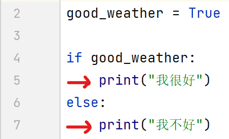
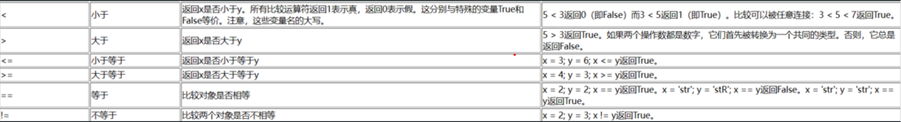

介绍一些基础知识。
我们需要一种既可以储存信息 又可以对它们进行操作的方法。
这是为什么要引入 变量 。
变量就是我们想要的东西——它们的值可以变化，即你可以使用变量存储任何东西。
变量是计算机中存储信息的一部分内存。
与字面意义上的常量不同，你需要一些能够访问这些变量的方法，因此你给变量名字。
变量可以储存不同的数据类型，包括：整数，小数，字符，布尔值，字符串 等。
Python 中的变量赋值不需要类型声明。
每个变量在使用前都必须赋值，变量赋值以后该变量才会被创建。
等号 = 用来给变量赋值。
等号 = 运算符左边是一个变量名，等号 =运算符右边是存储在变量中的值。例如：
name = "John" # 字符串
age = "15" # 整数
at_school = True # 布尔值
行首的空白在Python中是重要的。 它称为缩进。 在逻辑行首的空白（空格和制表符）用来决定逻辑行的缩进层次，从而用来决定语句的分组。 这意味着同一层次的语句必须有相同的缩进。
大于，小于，等于，不等于；大于等于，小于等于；
